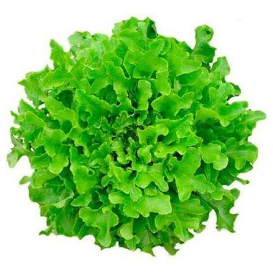

📖 Descrição
A Alface Mimosa (Lactuca sativa) é uma variedade de folhas delicadas, recortadas e macias, muito apreciada pelo sabor suave e pela textura leve. É bastante utilizada em saladas e contribui para uma alimentação saudável.
🌱 Cuidados
- Plantar em solo fértil e rico em matéria orgânica.
- Manter o solo sempre úmido, evitando encharcamento.
- Cultivar em local com boa luminosidade.
- Realizar adubações periódicas.
- Remover ervas daninhas para favorecer o desenvolvimento.
🌎 Origem
Originária da região do Mediterrâneo, sendo atualmente cultivada em diversas partes do mundo.
🐝 Atrai quais polinizadores?
Quando floresce, atrai abelhas, abelhas nativas, moscas polinizadoras e outros insetos benéficos.
🍽️ Parte comestível
Folhas.
💚 Benefícios para a saúde
- Rica em fibras, auxiliando o bom funcionamento do intestino.
- Fonte de vitaminas A, C e K.
- Contribui para a hidratação do organismo.
- Possui baixo teor calórico.
- Faz parte de uma alimentação equilibrada e saudável.
🌼 Curiosidade
A Alface Mimosa recebe esse nome devido às suas folhas delicadas, recortadas e macias, que lembram um formato rendado e proporcionam excelente apresentação em saladas.
🌍 Importância para o meio ambiente
Seu cultivo na horta escolar incentiva a educação ambiental, a alimentação saudável e o contato dos estudantes com práticas agrícolas sustentáveis. Quando floresce, também fornece alimento para insetos polinizadores.
🌾 Época de plantio
Pode ser cultivada durante praticamente todo o ano, apresentando melhor desenvolvimento em temperaturas amenas.
📱 Acesse esta página pelo QR Code

Escaneie o QR Code para acessar esta página pelo celular.